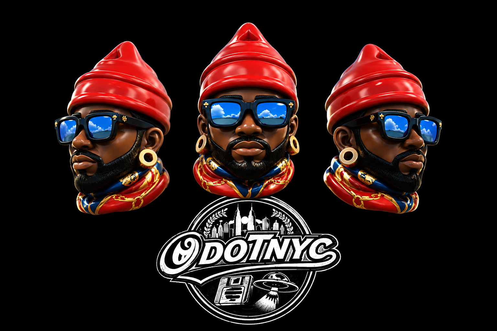

Technology
Websites, apps, interactive tools, and digital platforms with practical purpose.
Loading tech, culture, fashion, games, AR, and community systems.
A creative operating system of OdotNYC which is built around technology, engineering, street culture, fashion concepts, games, augmented reality, and community education.

OdotNYC is the creative identity of a New York City-based builder who merges technology, engineering, art, and street culture into one evolving ecosystem.
A self-taught full-stack developer and electronics enthusiast, OdotNYC designs digital platforms, embedded systems, experimental applications, interactive media, augmented reality experiences, and independent product concepts.
Music powers the process. The rhythm, culture, and energy of sound fuel late-night coding sessions, product sketches, and the daily drive to build something meaningful.
Beyond design and technology, OdotNYC is a father and community-minded creator who believes knowledge should be shared, especially with youth learning coding, electronics, and creative entrepreneurship.

Websites, apps, interactive tools, and digital platforms with practical purpose.
Electronics concepts, embedded systems, IoT ideas, and maker education.
Streetwear, visual identity, product storytelling, and NYC-inspired creative direction.
Learning resources, youth inspiration, reentry support, and accessible tech literacy.
Each project is part of the larger OdotNYC universe: build, teach, design, experiment, and create value.
Sticker packs, tote bags, and tech-driven merch drops built around art, culture, and interactive collector experiences.
The technology division focused on electronics, modern embedded systems, hardware concepts, creative coding, and maker education.
A nonprofit vision supporting African American men after incarceration through job readiness, basic digital skills, and stability pathways.
A warm coffee experience built around connection, inspiration, culture, and uplifting energy.
A colorful beauty brand built around nail art, confidence, family support, and young entrepreneurship.
A retro-inspired game world with handheld energy, playful exploration, and story-driven creative direction.
A sci-fi arcade experience inspired by UFO technology, retro gaming, and cosmic storytelling.
A browser-based augmented reality experience that blends digital identity, interactive branding, and web visuals.
A curated streetwear concept built around vintage discovery, rare energy, expressive style, and collected pieces.

Notes from the build process, experiments in web and hardware, and stories from the intersection of code, culture, and creative technology.
Visit MediumInterested in connecting, collaborating, donating, or building a project? Fill out the form and OdotNYC will follow up.